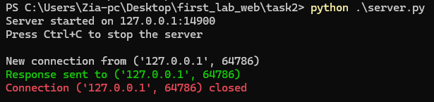
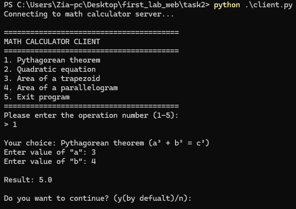

Задание 2: TCP Клиент-Сервер с математической операцией
Краткое описание задания
Реализовать клиентскую и серверную часть приложения. Клиент запрашивает выполнение математической операции, параметры которой вводятся с клавиатуры. Сервер обрабатывает данные и возвращает результат клиенту.
Варианты операций:
Теорема Пифагора. Решение квадратного уравнения. Поиск площади трапеции. Поиск площади параллелограмма.
Стек реализации
- Язык: Python
- Библиотека: socket
- Протокол: TCP
Как запускать
- Запустите сервер:
bash python server.py - Запустите клиента:
bash python client.py
server
server code
import socket
import time
HOST = "127.0.0.1"
PORT = 14900
BUFFER_SIZE = 1024
IPv4 = socket.AF_INET
TCP = socket.SOCK_STREAM
def pythagorean_theorem(operands):
a, b = operands
a = float(a)
b = float(b)
return str((a * a + b * b) ** 0.5)
def quadratic_equation(operands):
a, b, c = map(float, operands)
delta = b * b - 4 * a * c
if delta < 0:
return "The equation has no real root."
elif delta == 0:
return str(-b / (2 * a))
else:
x1 = (-b + delta**0.5) / (2 * a)
x2 = (-b - delta**0.5) / (2 * a)
return f"x1 = {x1}\t,\tx2 = {x2}"
def trapezoid(operands):
a, b, h = map(float, operands)
s = (a + b) * h / 2
return str(s)
def parallelogram(operands):
a, h = map(float, operands)
return str(a * h)
def handle_request(req):
operation_str, operands_str = req.split(";", 1)
operation = int(operation_str)
operands = operands_str.split(",")
match operation:
case 1:
return pythagorean_theorem(operands)
case 2:
return quadratic_equation(operands)
case 3:
return trapezoid(operands)
case 4:
return parallelogram(operands)
def main():
server_socket = socket.socket(socket.AF_INET, socket.SOCK_STREAM)
server_socket.bind((HOST, PORT))
server_socket.listen(10)
server_socket.setblocking(False)
print(f"Server started on {HOST}:{PORT}")
print("Press Ctrl+C to stop the server\n")
try:
while True:
client_socket = None
client_address = None
try:
client_socket, client_address = server_socket.accept()
client_socket.setblocking(False)
print(f"New connection from {client_address}")
try:
data = client_socket.recv(BUFFER_SIZE)
if data:
response = handle_request(data.decode("utf-8"))
client_socket.send(response.encode())
print(f"\033[92mResponse sent to {client_address}\033[0m")
except BlockingIOError:
print(f"No data from {client_address}")
except Exception as e:
print(f"Error processing {client_address}: {e}")
finally:
client_socket.close()
print(f"\033[91mConnection {client_address} closed\033[0m \n")
except BlockingIOError:
time.sleep(0.1)
continue
except Exception as e:
print(f"Error accepting connection: {e}")
if client_socket:
client_socket.close()
except KeyboardInterrupt:
print("\nServer is shutting down...")
finally:
server_socket.close()
print("SERVER STOPPED.")
if __name__ == "__main__":
main()
server output

client
client code
import socket
import sys
HOST = "127.0.0.1"
PORT = 14900
BUFFER_SIZE = 1024
IPv4 = socket.AF_INET
TCP = socket.SOCK_STREAM
OPERATIONS = {
1: "Pythagorean theorem",
2: "Quadratic equation",
3: "Area of a trapezoid",
4: "Area of a parallelogram",
5: "Exit program",
}
def show_menu():
print("\n" + "=" * 40)
print("MATH CALCULATOR CLIENT")
print("=" * 40)
for key, value in OPERATIONS.items():
print(f"{key}. {value}")
print("=" * 40)
def get_valid_input(prompt, must_be_positive=False):
while True:
try:
value = float(input(prompt))
if must_be_positive and value <= 0:
print("\033[91mInput must be greater than zero!\033[0m")
continue
return value
except ValueError:
print("\033[91mPlease enter a valid number!\033[0m")
def get_user_operation():
while True:
show_menu()
try:
choice = int(input("Please enter the operation number (1-5):\n> "))
if 1 <= choice <= 5:
return choice
else:
print("\033[91mPlease enter a number between 1 and 5!\033[0m")
except ValueError:
print("\033[91mInvalid input! Please enter a number.\033[0m")
def get_pythagorean_operands():
print(f"\nYour choice: {OPERATIONS[1]} (a² + b² = c²)")
a = get_valid_input('Enter value of "a": ', must_be_positive=True)
b = get_valid_input('Enter value of "b": ', must_be_positive=True)
return [a, b]
def get_quadratic_operands():
print(f"\nYour choice: {OPERATIONS[2]} (ax² + bx + c = 0)")
a = get_valid_input('Enter value of "a": ')
b = get_valid_input('Enter value of "b": ')
c = get_valid_input('Enter value of "c": ')
return [a, b, c]
def get_trapezoid_operands():
print(f"\nYour choice: {OPERATIONS[3]} (((a + b) × h) / 2)")
base1 = get_valid_input('Enter length of base "a": ', must_be_positive=True)
base2 = get_valid_input('Enter length of base "b": ', must_be_positive=True)
height = get_valid_input('Enter height "h": ', must_be_positive=True)
return [base1, base2, height]
def get_parallelogram_operands():
print(f"\nYour choice: {OPERATIONS[4]} (base × height)")
base = get_valid_input("Enter length of base: ", must_be_positive=True)
height = get_valid_input("Enter height: ", must_be_positive=True)
return [base, height]
def get_operands(operation):
match operation:
case 1:
return get_pythagorean_operands()
case 2:
return get_quadratic_operands()
case 3:
return get_trapezoid_operands()
case 4:
return get_parallelogram_operands()
case 5:
print("Goodbye!")
sys.exit(0)
def send_to_server(operation, operands):
try:
conn = socket.socket(IPv4, TCP)
conn.connect((HOST, PORT))
# Send operation and operands
data = f"{operation};{','.join(map(str, operands))}"
conn.send(data.encode())
# Receive result
result = conn.recv(BUFFER_SIZE).decode()
print(f"\nResult: {result}")
except ConnectionRefusedError:
print(
"\033[91mCould not connect to server. Make sure server is running.\033[0m"
)
except Exception as e:
print(f"\033[91mError communicating with server: {e}\033[0m")
def run_client():
print("Connecting to math calculator server...")
while True:
try:
operation = get_user_operation()
operands = get_operands(operation)
if operation != 5: # Don't send exit command to server
send_to_server(operation, operands)
# Ask if user wants to continue
continue_calc = input(
"\nDo you want to continue? (y(by defualt)/n): "
).lower()
if continue_calc not in ["y", "yes", ""]:
print("Thank you for using the calculator!")
break
except KeyboardInterrupt:
print("\n\nInterrupted by user. Goodbye!")
break
except Exception as e:
print(f"\033[91mUnexpected error: {e}\033[0m")
if __name__ == "__main__":
run_client()
Client Output
